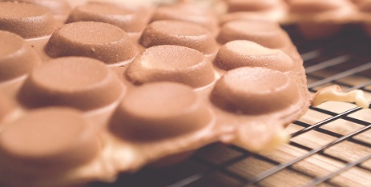

Ingredients:
- 1 cup all purpose flour (4 oz)
- 1 teaspoon baking powder
- 1 teaspoon corn starch
- 2 eggs
- 2/3 cup sugar
- 2 tablespoons evaporated milk
- 5 oz water
- 2 tablespoons vegetable oil
Description:
A popular Hoong Kong cafe dessert. Layered french toast stuffed with peanut butter, coated in egg and shallow fried.
Recipe credits:
Steps:
- Mix together the flour, baking powder, corn starch in a large bowl.
- Add the eggs, sugar, vegetable oil, and vanilla. Mix by hand.
- Pour in the evaporated milk and mix thoroughly.
- Let it stand for an hour helped dissolve the lumps.
- Set a wire rack on a baking sheet.
- Pre-heat each half of the Nordic Ware Egg Waffle Pan for 5 minutes.
- Lightly brush with vegetable oil. Lower heat to medium.
- Pour ¾ cup of the batter into the middle of the egg waffle pan.
- Immediately place the other side of the pan on top, flip the pan over and cook for 2 to 2.5 minutes.
- Flip again and cook for a further 2 to 2.5 minutes.
- Open the pan and invert the eggettes onto the wire rack and let cool for a minute or so.
- Repeat with the remaining batter. Enjoy!!